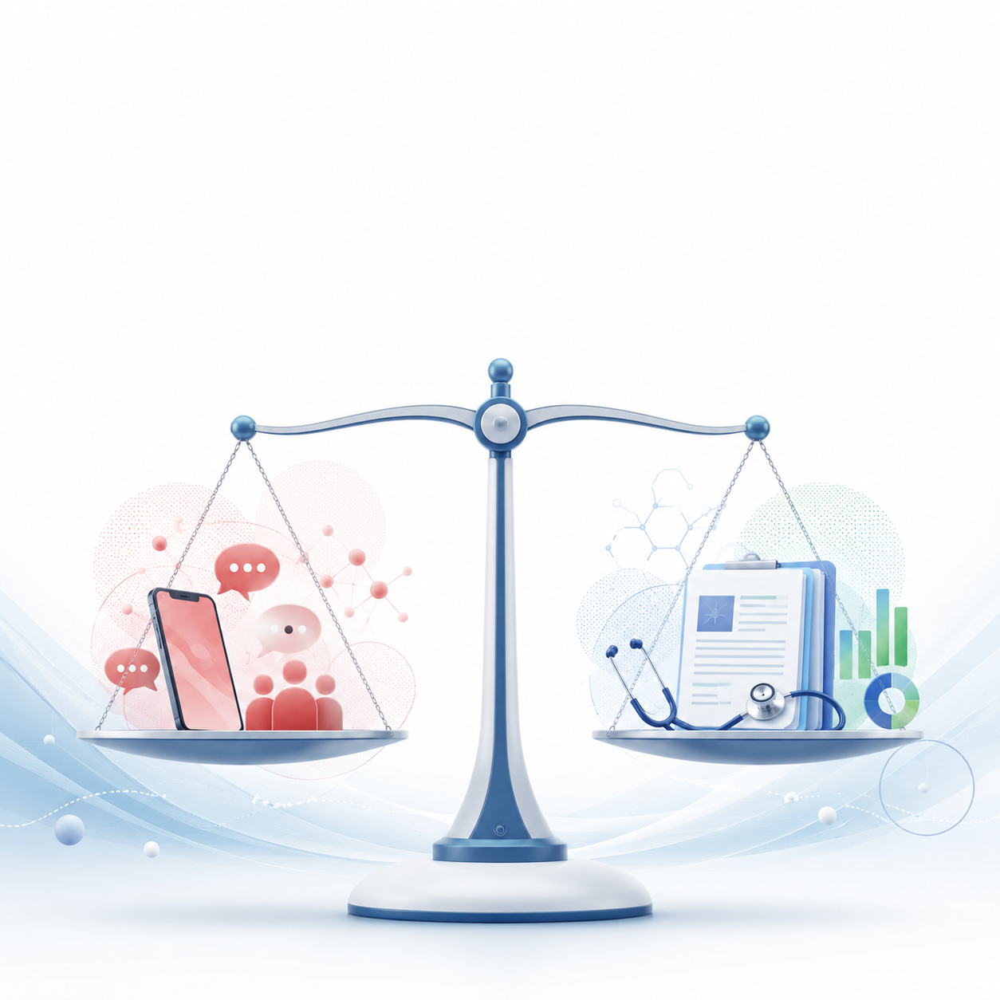
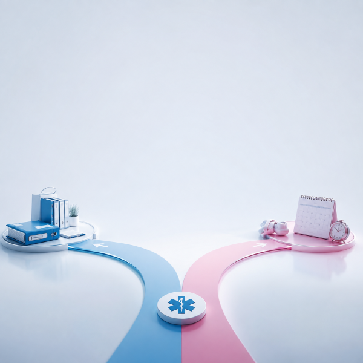
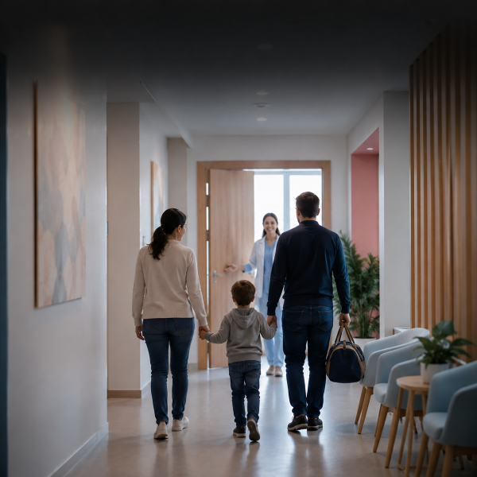
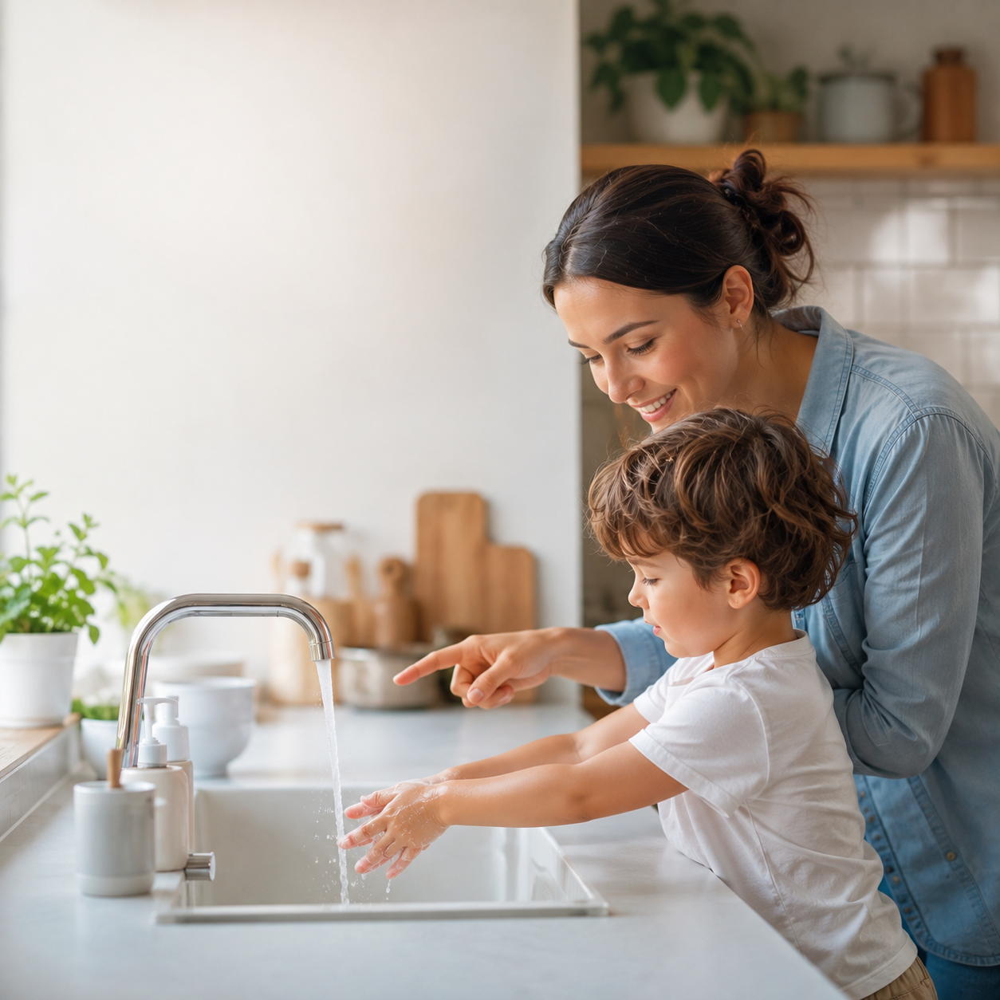
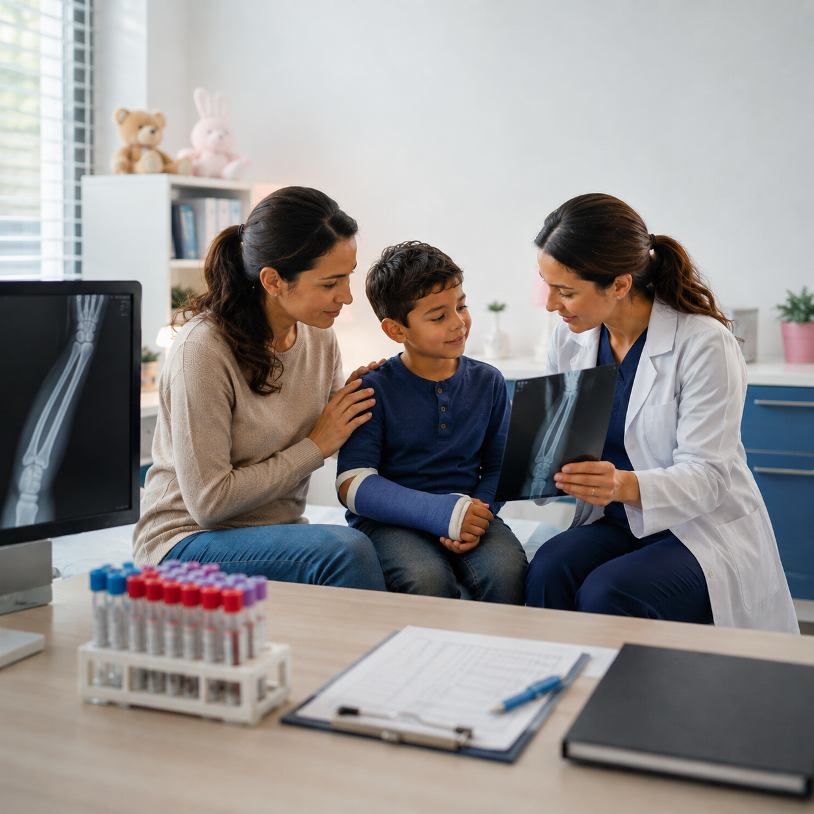

Le Blog — des sujets du quotidien discutés avec les parents
المدونة — مواضيع يومية نناقشها مع الآباء
Ce blog rassemble les sujets que nous recevons au quotidien au cabinet : discussions avec les parents, fausses idées courantes, prévention et quotidien post-opératoire. Des articles courts, illustrés et relus par le Dr Ziane Khodja.
تجمع هذه المدونة المواضيع التي نستقبلها يومياً في العيادة: نقاشات مع الآباء، أفكار خاطئة شائعة، وقاية ويوميات بعد العملية. مقالات قصيرة، مصورة ومراجعة من الدكتورة زيان خوجة.
On vous a dit que... Vérifions ensemble
هل قيل لكم أن... لنتحقق معاً
6 fausses croyances que le Dr Ziane Khodja entend chaque semaine — expliquées sans juger.
6 أفكار خاطئة تسمعها الدكتورة كل أسبوع — مشروحة بدون حكم.

Tous les articles
جميع المقالات

Mythes vs Réalitéخرافة مقابل حقيقةMythes vs Réalité
خرافة مقابل حقيقة
Démêlez le vrai du faux sur la circoncision avec la littérature médicale.
افصلوا بين الصحيح والخاطئ حول الختان وجراحة الأطفال.
Idées reçues
أفكار مسبقة
On vous a dit que… ? 17 fausses croyances corrigées par le Dr.
هل قيل لكم أن...؟ 6 أفكار خاطئة تصححها الطبيبة.
Questions pratiques
أسئلة عملية
10 réponses concrètes : sac, école, pleurs, pansement — la réassurance parentale.
إجابات عملية على الأسئلة التي تطرحونها يومياً.

ComparatifمقارنةComparatif — Aide à la décision
مقارنة — مساعدة على القرار
Privé vs public, urgence vs programmé : choisir en connaissance de cause.
المزايا والعيوب ونقاط الانتباه لاتخاذ القرار السليم.
Étapes & Parcours de soin
مراحل ومسار العلاج
De la consultation au suivi J30 : le parcours pas à pas, en toute transparence.
من الاستشارة إلى المتابعة: تابعوا المسار خطوة بخطوة.
Actualité médicale
أخبار طبية
Recommandations HAS, OMS, âge optimal et bonnes pratiques validées.
التوصيات الرسمية وتطور الممارسة الجراحية.

HistoiresقصصHistoires — Cas anonymisés
قصص — حالات مجهولة
Enfant anxieux, matinée type, reprises de circoncision et de plâtre — sans jugement.
روايات ملموسة لفهم الأمور وتطمينكم.
Calendrier — Vacances & Aïd
التقويم — عطل وعيد
Été, petites vacances, Aïd : quand programmer sans rater l'école.
متى نخطط للاستشارة؟ أفضل الفترات حسب إيقاع عائلتكم.
Prévention & Signes d'alerte
وقاية وإشارات إنذار
Quand s'inquiéter ? Nouveau-né, fièvre, gonflement et dépistage précoce.
متى نقلق؟ العلامات التي يجب أن تنبه والكشف المبكر.
Quotidien post-opératoire
يوميات بعد العملية
De la sortie au retour à l'école : le quotidien à la maison après l'acte.
من الخروج إلى العودة للمدرسة: اليوميات في المنزل.
Rôle des parents
دور الوالدين
Père, mère, fratrie : le rôle émotionnel avant et après — sans culpabilité.
الدور العاطفي والعلائقي قبل وبعد التدخل.
Questions culturelles
أسئلة ثقافية
Tradition et médecine : le Dr répond avec douceur — parents présents pendant l'acte.
التقليد والطب: إجابات لطيفة من الطبيبة للوالدين.

Conseils aux parentsنصائح للآباء والأمهاتConseils aux parents
نصائح للآباء والأمهات
Prévention et quotidien : 10 conseils fiables même quand l'enfant n'est pas malade.
الوقاية واليوميات: مصدر موثوق حتى بدون مرض.

Les examens médicaux de l’enfant : comprendre leur utilité
الفحوصات الطبية للطفل: فهم فائدتها
Quand faire une radio, une écho ou un bilan ? Le Dr vous explique leur utilité réelle.
متى نعمل أشعة أو سونار أو تحاليل؟ تشرح لكم الطبيبة فائدتها الحقيقية.
13 rubriques · Contenus relus médicalement · Mise à jour mai 2026